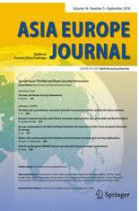

收录于合集

简 介
【文章原题】 Europe’s financial security and Chinese economic statecraft: the case of the Belt and Road Initiative
【作者简介】 雷蒙 ·帕切科·帕多（Ramon Pacheco Pardo），伦敦大学国王学院（King’s College London）欧洲与国际研究部，国际关系学高级讲师
【编译】 徐枫潇
【校对】 李 桐
【 文章来源 】Asia Europe Jounal, 2018 (16):237-250
【 期刊介绍 】

Asia Europe Jounal ，季刊，以亚欧为研究对象，通过针对亚欧可能面临的发展机遇与挑战，提供学术性的客观分析，旨在发表各类学术性文章。
【关键词】 一带一路 中国 经济危机 经济治国之道 欧洲 金融
【核心观点】 尽管一带一路倡议可能会对欧洲金融与经济安全带来危机，但其潜在益处已经促使许多欧洲国家谋求引用一带一路投资，从而加强欧陆各国融资地位。
************一、一带一路倡议：中国经济金融治国方略？
经济治国方略，可以被定义为，用经济方法实现对外政策的目标。
经济方法是否真能实现对外政策目标，这个问题尽管难以检验，但该定义的使用仍比较普遍。鉴于经济国策通常不是以国家严正声明的形式，而是通过经济主体来推行，那么应当强调，经济国策源于国家控制与引导经济主体的能力。
显然，在全球经济危机与欧债危机后的一段时间里，中国致力于推行资金优惠来影响目标国家的行为，如持续以对外直接投资的方式施加政治影响。以欧洲为例，面对严重的信贷危机，中国抓住欧洲诸国对金融安全的需要来影响其对外政策。
************二、中国经济治国方略与一带一路倡议融资
对中国而言，一带一路的融资，迄今为止仍是重要任务。中国已经发表声明，明确要在2025年之前融资 1.25万亿美元；同时，中国已经同一带一路的目标国家和地区，以合作基金的形式建立了伙伴关系；中国本身也为融资做出了很多努力，如：为亚投行提供了500亿美元，为新开发银行出资400亿美元。总的来说，在金融领域，以投资形式出现的中国经济治国方略，已经在一带一路倡议中有所体现了。无论是单边、区域化的，还是多边化机构，中国资本在倡议的早期阶段都至关重要。
************三、来自中国的支持？——一带一路倡议与欧洲金融安全
近来，中国投资充满各种争议，主要是由于在一些经济活动领域中，中国推行保护主义限制外国投资，而欧盟及其他欧洲国家则在该类领域对中国投资持开放态度。一带一路倡议的相关投资就是在这种环境下应运而生的，对于欧洲来说，投资的增加与资本的多样化，使其金融安全得到加强，这恰恰是一带一路倡议的两大积极效用。
一带一路投资相关的中国经济国策，开始发挥作用。中国已经与欧洲诸国在双边的、区域化的和多元化的不同程度上，建立了各种投资渠道，中欧双方可以营造一种互利共赢的投资关系。
************四、折回中国——在较为分裂的欧洲推行一带一路
中国经济政策中的保护主义做法一直被诟病，并未对欧洲的投资开放性给予同等的政策互惠。对欧陆本身而言，对中国的非议主要集中在两点：“分而治之”的经济政策，企图以经济影响力分裂欧洲国家从而弱化对北京政策的反对；中国投资破坏了欧洲乃至整个西方的价值准则。
************五、结论 ** ** ****** **** ******
总体上，欧洲是很欢迎一带一路倡议投资的。这说明，伴随着对双赢的经济相互依存的培养，中国经济方略正在发挥作用。同时，北京的“分而治之”战略与同欧洲的规范化差异也制造了许多摩擦，影响一带一路相关投资。对于欧洲而言，对金融安全的关切会促使欧陆未来在很大程度上欢迎中国的倡议。
点击 阅读原文 可获取全文pdf版！
更多阅读
【一周预告】国政学人下周（10.29-11.2）文章推送安排预告！ ****
- SSCI编译
… （请点击此链接查看更多历史文章！） ****
**
**
- 中文转载
… （ 请点击此链接查看更多历史文章！）
**
**
- 资源更新
… ( 请点击此链接查看更多历史文章！）

为方便学人及时接收高质量文章推送
别忘了把国政学人设置 星标 哦~
**
**